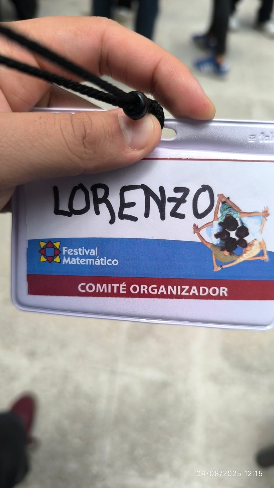
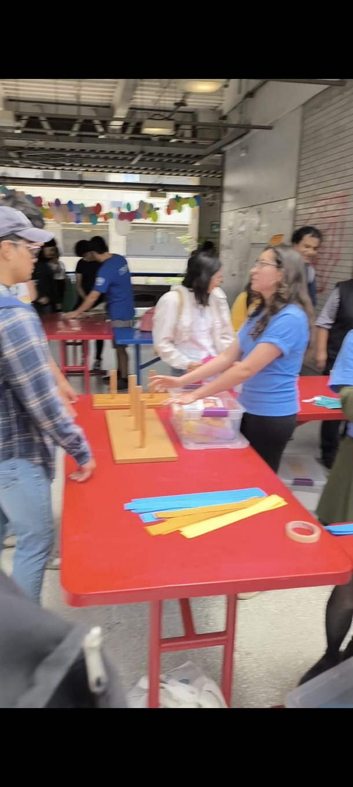
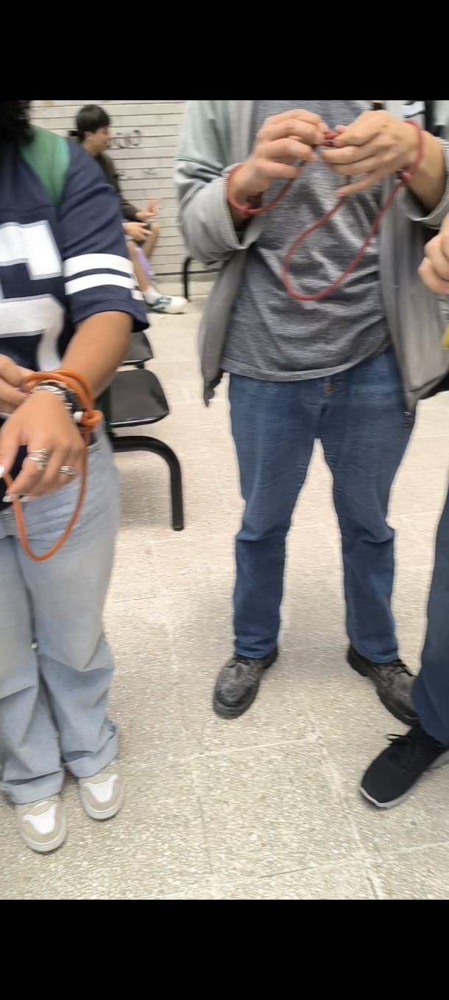
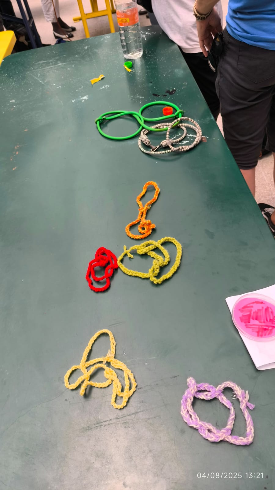
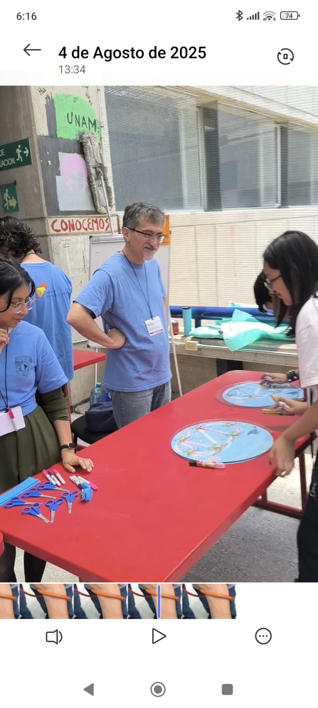
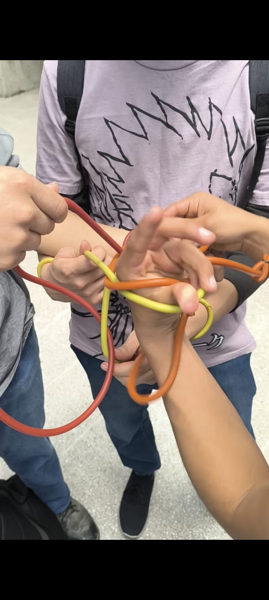

LudoCiencias is a multidisciplinary outreach festival organized by the Faculty of Sciences as part of the welcome activities for the incoming Generation 2026 at UNAM. The event introduces new students to university life through playful and educational experiences that showcase the diversity of academic disciplines offered by the Faculty.
In this context, I contributed by leading interactive mathematics activities aimed at engaging first-year students through a hands-on and approachable perspective. These dynamics promote direct interaction with the audience, presenting mathematics as an accessible and enjoyable discipline within the broader academic environment.





